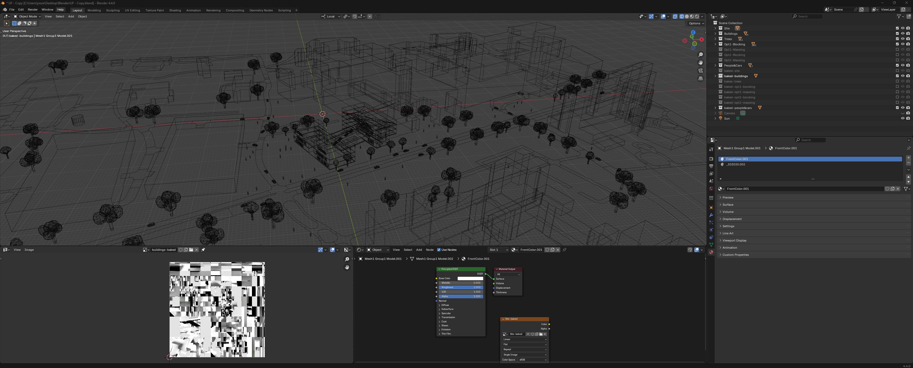
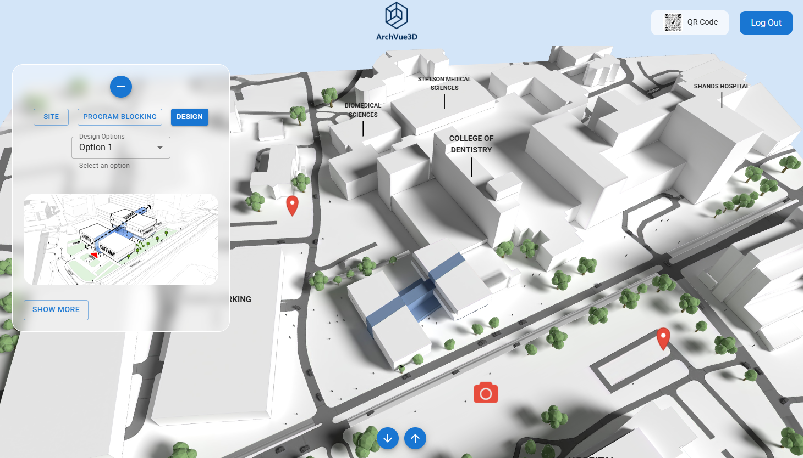
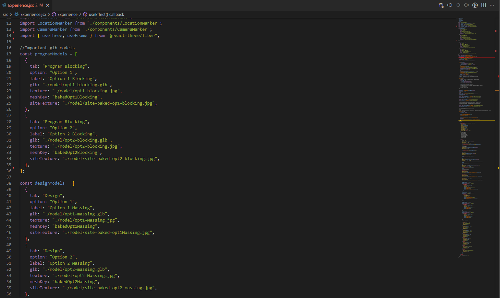
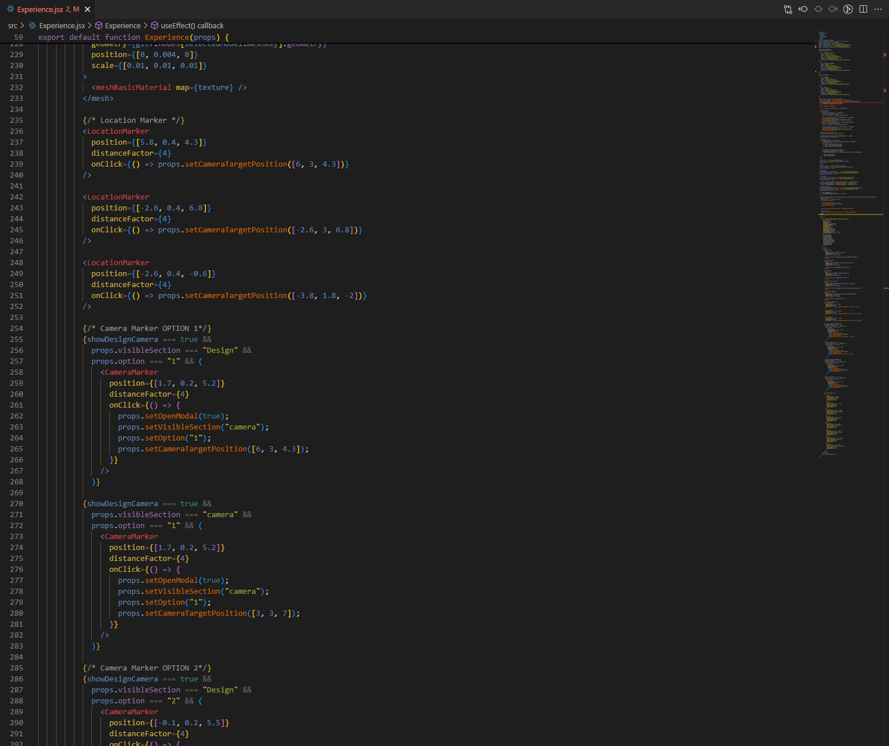

ARCHVUE3D // This Tool is Under Development
Transforming architectural visualization from static 2D images into immersive, interactive and engaging experiences.
Architecture in Motion: Bridging Digital & Physical Worlds
As both architect and developer, I am currently building ArchVue3D to move beyond the limitations of traditional 2D architectural visualizations, which often struggle to capture the full depth of a design. Built in Three.js with Blender for modeling, the tool transforms static visuals into real-time, interactive experiences that can be easily shared with clients and project teams.
View Product Under DevelopmentTech Stack
- Blender
- Javascript
- Three.js
- React Three Fiber

The idea behind ArchVue3D
ArchVue3D was born from a desire to rethink how architectural designs are experienced. Rather than relying on static images or linear presentations, the tool is meant to make architecture tangible and interactive , allowing users to explore spaces at their own pace and engage with design intent in a more intuitive way.
The goal is to bridge the gap between conceptual drawings and physical experience, creating a platform that communicates project’s spatial relationships and overall vision. It also serves as a lasting resource beyond presentations —something clients can revisit after interviews to re-engage with the vision and strengthen their connection to the project.
Curious about the process?
Transforming the Scene in Blender
Creating a baseline 3D model was the first step in understanding what the user interface would need to support. Since there were few examples of Three.js applied to architectural visualization, it was initially challenging to imagine how the interface and scene would function and interact.
Starting with the SketchUp model, I transformed it into a usable .glb file through Blender, which allowed me to optimize the geometry, refine materials, and bake lighting for efficient real-time rendering. For a more detailed step-by-step explanation of I handle the scene optimization process, see the Summer Night Wander project.
Establishing this optimized scene early helped clarify which interactive elements and navigation features the interface would require, including my goal of allowing users to select and explore different design options and concepts. While materials could have been applied directly in Three.js to allow dynamic and in-browser material changes, predefining them during modeling aligned with my goal of presenting a polished concept rather than a configurable prototype.

Building the User Interface
Creating the user interface was an iterative process guided by the goal of keeping the 3D scene front and center. In an ideal scenario, I would have collaborated with UX researchers and designers to refine the interface, but I developed the system independently using React and MUI to ensure a clean, functional, and maintainable structure.
The interface is intentionally minimal: a left-hand menu allows users to toggle between “Site,” “Program Blocking,” and “Design,” each of which can be further explored through two selectable options that update the building model in the scene. A header navigation bar includes a QR code, enabling users to open the project on mobile devices, and a “Logout” button, since access requires login. At the bottom, a simple footer features up and down arrows to navigate between predefined camera positions, giving users control over their perspective while keeping the interface unobtrusive and letting the architectural visualization take the spotlight.

Managing models in R3F
To support the interface toggles, I exported over a dozen .glb models—including options across “Site,” “Program Blocking,” and “Design,” as well as separate models for trees, people, and cars. These were imported into R3F as an array, with individual building and site textures to ensure accurate lighting and shadows. Each model was assigned a label, allowing menu selections in the UI to update the scene dynamically. This modular approach preserved visual fidelity, optimized performance, and made the codebase more maintainable and organized.

Adding Orbit Control, Camera Markers and Location Markers
To enhance navigation and exploration within the scene, I implemented orbit controls that allow users to rotate, zoom, and pan the camera smoothly around the models. I also created camera markers and location markers as reusable components, with positions, onClick functions, and distance factors passed as props. These markers provide intuitive points of interaction, enabling users to quickly jump between predefined camera positions or highlight specific areas of interest within the scene.

Ongoing Development
ArchVue3D is still a work in progress, and more details about the development process will be added soon. Current efforts are focused on making the tool accessible on mobile devices, exploring potential VR implementation to further enhance immersive experiences, and refining the project by addressing bugs and improving overall performance.
View Project on GitHubCoded with ♥ by Aurélie